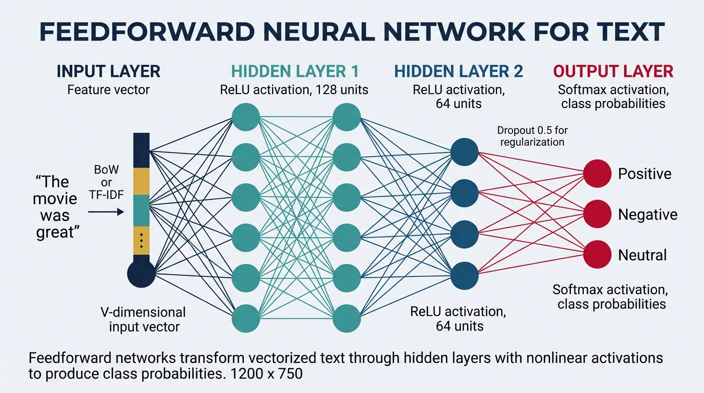
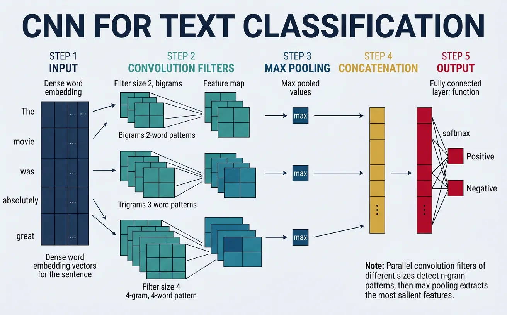
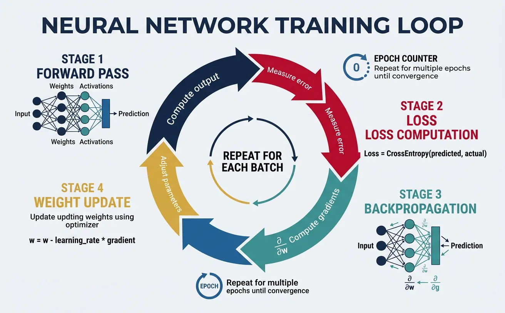
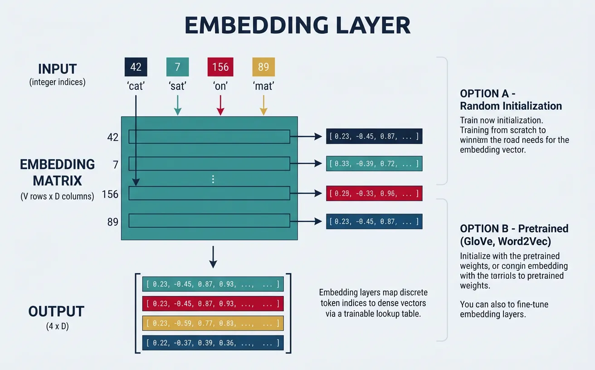
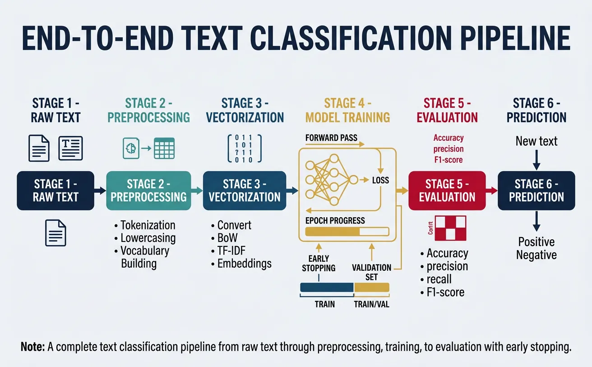

Introduction to Neural NLP
Deep learning transformed NLP by learning features automatically from data instead of hand-crafting them. This part covers the fundamentals of applying neural networks to text.
Key Insight
Neural networks learn hierarchical representations of text, capturing increasingly abstract features from characters to words to phrases to semantics.
NLP Mastery
NLP Fundamentals & Linguistic Basics
Phonology, morphology, syntax, semantics, pragmaticsTokenization & Text Cleaning
Subword tokenization, BPE, stopwords, normalizationText Representation & Feature Engineering
Bag-of-words, TF-IDF, feature extraction, vectorizationWord Embeddings
Word2Vec, GloVe, FastText, embedding spaces, analogiesStatistical Language Models & N-grams
Probability chains, smoothing, perplexity, Markov modelsNeural Networks for NLP
Feedforward nets, backpropagation, activation functionsRNNs, LSTMs & GRUs
Sequence modeling, vanishing gradients, gated architecturesTransformers & Attention Mechanism
Self-attention, multi-head attention, positional encodingPretrained Language Models & Transfer Learning
BERT, RoBERTa, fine-tuning, feature extractionGPT Models & Text Generation
Autoregressive generation, prompting, GPT architectureCore NLP Tasks
NER, POS tagging, sentiment analysis, text classificationAdvanced NLP Tasks
Question answering, summarization, machine translationMultilingual & Cross-lingual NLP
mBERT, XLM-R, zero-shot transfer, language diversityEvaluation, Ethics & Responsible NLP
BLEU, ROUGE, bias detection, fairness, responsible AINLP Systems, Optimization & Production
Model serving, quantization, distillation, deploymentCutting-Edge & Research Topics
LLMs, multimodal NLP, reasoning, emerging researchFeedforward Networks for Text
Feedforward neural networks (FFNs), also called Multi-Layer Perceptrons (MLPs), are the simplest form of neural networks where information flows in one direction—from input through hidden layers to output. For NLP tasks, these networks take fixed-size text representations (like bag-of-words vectors or averaged word embeddings) and transform them through successive layers to make predictions such as sentiment classification or topic categorization.
The key insight behind using feedforward networks for text is that each layer learns increasingly abstract representations. The first layer might learn simple word co-occurrence patterns, while deeper layers can capture semantic relationships and complex linguistic features. Unlike traditional machine learning models that require manual feature engineering, neural networks automatically discover useful features from raw text representations.

Architecture Overview
A typical feedforward network for text classification consists of an input layer that accepts vectorized text, one or more hidden layers with nonlinear activation functions, and an output layer that produces class probabilities. The hidden layers are called "dense" or "fully connected" because every neuron connects to every neuron in the adjacent layers. The width (number of neurons) and depth (number of layers) are hyperparameters that control the network's capacity to learn complex patterns.
Feedforward Network Architecture for Text
flowchart LR
subgraph INPUT["INPUT LAYER\n(Text Vector, size V)"]
x1["x₁\nthe"]
x2["x₂\ncat"]
x3["x₃\nsat"]
xn["xᵥ\n(vocab)"]
end
subgraph HIDDEN["HIDDEN LAYERS\n(Feature Learning, 256–512)"]
h1["h₁"]
h2["h₂"]
h3["h₃"]
hn["hₙ"]
end
subgraph OUTPUT["OUTPUT LAYER\n(Predictions + Softmax)"]
y1["y₁\nPositive"]
y2["y₂\nNegative"]
y3["y₃\nNeutral"]
end
x1 & x2 & x3 & xn -- "W₁·x + b₁" --> h1 & h2 & h3 & hn
h1 & h2 & h3 & hn -- "W₂·h + b₂" --> y1 & y2 & y3
Each arrow represents a fully-connected weight matrix. Hidden units apply h = activation(W·x + b) — ReLU is typical for intermediate layers; softmax on the output gives class probabilities.
Let's implement a basic feedforward network for text classification in PyTorch:
import torch
import torch.nn as nn
import torch.nn.functional as F
import numpy as np
# Define a simple Feedforward Network for text classification
class TextMLP(nn.Module):
def __init__(self, vocab_size, hidden_dim=256, num_classes=3, dropout=0.5):
super(TextMLP, self).__init__()
# Input layer to first hidden layer
self.fc1 = nn.Linear(vocab_size, hidden_dim)
self.bn1 = nn.BatchNorm1d(hidden_dim)
# Second hidden layer
self.fc2 = nn.Linear(hidden_dim, hidden_dim // 2)
self.bn2 = nn.BatchNorm1d(hidden_dim // 2)
# Output layer
self.fc3 = nn.Linear(hidden_dim // 2, num_classes)
# Dropout for regularization
self.dropout = nn.Dropout(dropout)
def forward(self, x):
# First hidden layer with ReLU activation
x = self.fc1(x)
x = self.bn1(x)
x = F.relu(x)
x = self.dropout(x)
# Second hidden layer
x = self.fc2(x)
x = self.bn2(x)
x = F.relu(x)
x = self.dropout(x)
# Output layer (no activation - raw logits for CrossEntropyLoss)
x = self.fc3(x)
return x
# Create sample data: bag-of-words vectors
vocab_size = 5000
num_samples = 100
num_classes = 3
# Simulated sparse BoW vectors
X = torch.randn(num_samples, vocab_size).abs() # Simulating word counts
y = torch.randint(0, num_classes, (num_samples,))
# Initialize model
model = TextMLP(vocab_size=vocab_size, hidden_dim=256, num_classes=num_classes)
# Forward pass
logits = model(X)
print(f"Input shape: {X.shape}")
print(f"Output logits shape: {logits.shape}")
print(f"Sample predictions (softmax): {F.softmax(logits[0], dim=0)}")
Understanding Layer Dimensions
For a vocabulary of 10,000 words and 3-class classification with a 2-layer MLP:
- Input → Hidden1: 10,000 × 512 = 5.12M parameters
- Hidden1 → Hidden2: 512 × 256 = 131K parameters
- Hidden2 → Output: 256 × 3 = 768 parameters
The first layer dominates parameter count. Using embeddings instead of raw BoW dramatically reduces this.
Activation Functions
Activation functions introduce nonlinearity into neural networks, allowing them to learn complex patterns beyond what linear transformations can capture. Without activation functions, stacking multiple linear layers would collapse into a single linear transformation. For NLP tasks, the choice of activation function affects both model performance and training dynamics.
The three most common activation functions in modern neural networks are ReLU (Rectified Linear Unit), Tanh (hyperbolic tangent), and Sigmoid. ReLU has become the default choice for hidden layers due to its computational efficiency and mitigation of the vanishing gradient problem. However, variants like Leaky ReLU and GELU (Gaussian Error Linear Unit) are increasingly popular, especially in transformer architectures.
import torch
import torch.nn as nn
import torch.nn.functional as F
import matplotlib.pyplot as plt
import numpy as np
# Create input range for visualization
x = torch.linspace(-5, 5, 200)
# Define activation functions
activations = {
'ReLU': F.relu(x),
'Leaky ReLU': F.leaky_relu(x, negative_slope=0.1),
'Tanh': torch.tanh(x),
'Sigmoid': torch.sigmoid(x),
'GELU': F.gelu(x),
'ELU': F.elu(x, alpha=1.0)
}
# Visualize all activations
fig, axes = plt.subplots(2, 3, figsize=(14, 8))
axes = axes.flatten()
for idx, (name, activation) in enumerate(activations.items()):
axes[idx].plot(x.numpy(), activation.numpy(), linewidth=2, color='teal')
axes[idx].axhline(y=0, color='gray', linestyle='--', alpha=0.5)
axes[idx].axvline(x=0, color='gray', linestyle='--', alpha=0.5)
axes[idx].set_title(name, fontsize=12, fontweight='bold')
axes[idx].set_xlabel('Input')
axes[idx].set_ylabel('Output')
axes[idx].grid(True, alpha=0.3)
axes[idx].set_xlim(-5, 5)
plt.tight_layout()
plt.savefig('activation_functions.png', dpi=150)
plt.show()
print("Activation functions visualized successfully!")
Activation Function Selection Guide
- ReLU: Default for hidden layers. Fast, but can cause "dying neurons" (output always 0).
- Leaky ReLU: Prevents dying neurons by allowing small negative gradients.
- GELU: Smooth approximation of ReLU, used in BERT/GPT models.
- Tanh: Output range [-1, 1], useful when centered outputs are needed.
- Sigmoid: Output range [0, 1], used for binary classification output layers.
- Softmax: Converts logits to probability distribution (multi-class output).
import torch
import torch.nn as nn
import torch.nn.functional as F
# Compare activation functions with gradients
class ActivationComparison(nn.Module):
def __init__(self, activation_name='relu'):
super().__init__()
self.activation_name = activation_name
def forward(self, x):
if self.activation_name == 'relu':
return F.relu(x)
elif self.activation_name == 'leaky_relu':
return F.leaky_relu(x, negative_slope=0.01)
elif self.activation_name == 'gelu':
return F.gelu(x)
elif self.activation_name == 'tanh':
return torch.tanh(x)
elif self.activation_name == 'sigmoid':
return torch.sigmoid(x)
else:
return x
# Test gradient flow for different activations
print("Gradient Analysis for Different Activations:")
print("=" * 50)
for act_name in ['relu', 'leaky_relu', 'gelu', 'tanh', 'sigmoid']:
# Create test input with gradient tracking
x = torch.tensor([-2.0, -1.0, 0.0, 1.0, 2.0], requires_grad=True)
# Apply activation
model = ActivationComparison(act_name)
y = model(x)
# Compute gradients (dy/dx for each input)
y.sum().backward()
print(f"\n{act_name.upper()}:")
print(f" Input: {x.data.numpy()}")
print(f" Output: {y.data.numpy().round(3)}")
print(f" Gradient: {x.grad.numpy().round(3)}")
CNNs for Text Classification
Convolutional Neural Networks (CNNs), originally designed for image processing, have proven remarkably effective for text classification. The key insight is that local patterns—n-gram features like "not good" or "very helpful"—are crucial for understanding text meaning. CNNs excel at detecting these patterns regardless of their position in the text, making them ideal for sentiment analysis and document classification.
Unlike feedforward networks that treat text as a bag of words, CNNs preserve word order and learn to recognize sequential patterns through convolution filters. The 2014 paper "Convolutional Neural Networks for Sentence Classification" by Yoon Kim demonstrated that a simple CNN architecture with multiple filter sizes could achieve state-of-the-art results on various text classification benchmarks.

1D Convolutions
In text processing, we use 1D convolutions where filters slide across the sequence dimension (words) while spanning the entire embedding dimension. A filter with kernel size 3 looks at trigrams—three consecutive words at a time. Multiple filters with different kernel sizes (e.g., 2, 3, 4, 5) capture n-grams of varying lengths, allowing the network to detect both short phrases ("not bad") and longer expressions ("would definitely recommend").
CNN Architecture for Text Classification
flowchart TD
INPUT["Input Sentence\n'This movie was absolutely fantastic'\n5 word tokens"]
EMBED["Embedding Layer\n5 x 100 matrix\neach word → 100-dim vector"]
INPUT --> EMBED
EMBED --> F2 & F3 & F4
subgraph CONV["Parallel Convolutional Filters"]
F2["Filter k=2\nbigrams\n100 filters"]
F3["Filter k=3\ntrigrams\n100 filters"]
F4["Filter k=4\n4-grams\n100 filters"]
end
F2 --> P2["Max Pool\n100 values"]
F3 --> P3["Max Pool\n100 values"]
F4 --> P4["Max Pool\n100 values"]
P2 & P3 & P4 --> CONCAT["Concatenate\n300-dim feature vector"]
CONCAT --> FC["Dropout 0.5 + Fully Connected\n300 → num_classes"]
FC --> OUT["Softmax Output\n0.02 / 0.08 / 0.90\npos / neg / neutral"]
Parallel filters of different widths capture bigram, trigram, and 4-gram patterns simultaneously. Max pooling extracts the strongest signal from each filter bank; the concatenated 300-dim vector feeds the classifier.
import torch
import torch.nn as nn
import torch.nn.functional as F
# Demonstrate 1D Convolution mechanics for text
print("Understanding 1D Convolution for Text")
print("=" * 50)
# Sample embedded sentence: batch=1, seq_len=7, embed_dim=5
# Simulating: "The movie was really very quite good"
torch.manual_seed(42)
embedded_sentence = torch.randn(1, 7, 5) # (batch, seq_len, embed_dim)
print(f"Input shape: {embedded_sentence.shape}")
print(f"Interpretation: batch_size=1, sequence_length=7, embedding_dim=5")
# PyTorch Conv1d expects: (batch, channels, seq_len)
# For text: channels = embedding_dim
text_input = embedded_sentence.transpose(1, 2) # (1, 5, 7)
print(f"\nAfter transpose for Conv1d: {text_input.shape}")
print(f"Interpretation: batch=1, embed_dim=5, seq_len=7")
# Create convolution filters
conv_bigram = nn.Conv1d(in_channels=5, out_channels=10, kernel_size=2)
conv_trigram = nn.Conv1d(in_channels=5, out_channels=10, kernel_size=3)
conv_fourgram = nn.Conv1d(in_channels=5, out_channels=10, kernel_size=4)
# Apply convolutions
bigram_features = conv_bigram(text_input)
trigram_features = conv_trigram(text_input)
fourgram_features = conv_fourgram(text_input)
print(f"\nBigram convolution output: {bigram_features.shape}")
print(f" (seq_len=7, kernel=2 → output_len=7-2+1=6)")
print(f"Trigram convolution output: {trigram_features.shape}")
print(f" (seq_len=7, kernel=3 → output_len=7-3+1=5)")
print(f"4-gram convolution output: {fourgram_features.shape}")
print(f" (seq_len=7, kernel=4 → output_len=7-4+1=4)")
Pooling Strategies
After convolution, pooling reduces the variable-length feature maps to fixed-size vectors. Max pooling over the sequence selects the strongest activation for each filter, capturing the most salient n-gram pattern regardless of its position. This is crucial for text where a sentiment-bearing phrase could appear anywhere in the document. Alternative strategies include average pooling (captures overall feature presence) and k-max pooling (retains top-k activations for more nuanced representation).
import torch
import torch.nn as nn
import torch.nn.functional as F
# Demonstrate different pooling strategies
torch.manual_seed(42)
# Simulated convolution output: (batch=2, num_filters=4, seq_len=10)
conv_output = torch.randn(2, 4, 10)
print("Convolution output shape:", conv_output.shape)
print("Sample filter activations (batch 0, filter 0):")
print(conv_output[0, 0].numpy().round(2))
# 1. Global Max Pooling - most common for text
max_pooled = F.max_pool1d(conv_output, kernel_size=conv_output.size(2))
max_pooled = max_pooled.squeeze(-1)
print(f"\nMax Pooling result: {max_pooled.shape}")
print(f"Values (batch 0): {max_pooled[0].numpy().round(3)}")
print("(Captures strongest activation per filter)")
# 2. Global Average Pooling
avg_pooled = F.avg_pool1d(conv_output, kernel_size=conv_output.size(2))
avg_pooled = avg_pooled.squeeze(-1)
print(f"\nAverage Pooling result: {avg_pooled.shape}")
print(f"Values (batch 0): {avg_pooled[0].numpy().round(3)}")
print("(Captures overall feature presence)")
# 3. K-Max Pooling (keep top-k values per filter)
k = 3
k_max_pooled, indices = torch.topk(conv_output, k=k, dim=2)
print(f"\nK-Max Pooling (k=3) result: {k_max_pooled.shape}")
print(f"Top-3 values (batch 0, filter 0): {k_max_pooled[0, 0].numpy().round(3)}")
print(f"Their positions: {indices[0, 0].numpy()}")
print("(Retains multiple strong activations per filter)")
# 4. Attention-weighted pooling (learned importance)
attention_weights = F.softmax(conv_output, dim=2)
attention_pooled = (conv_output * attention_weights).sum(dim=2)
print(f"\nAttention Pooling result: {attention_pooled.shape}")
print(f"Values (batch 0): {attention_pooled[0].numpy().round(3)}")
print("(Weighted sum based on learned importance)")
Complete CNN Text Classifier (Kim 2014 Style)
This implementation follows the influential "Convolutional Neural Networks for Sentence Classification" paper with multiple parallel filter sizes.
import torch
import torch.nn as nn
import torch.nn.functional as F
class TextCNN(nn.Module):
"""
CNN for text classification following Kim (2014) architecture.
Multiple filter sizes capture n-grams of different lengths.
"""
def __init__(self, vocab_size, embed_dim=300, num_classes=2,
num_filters=100, filter_sizes=[2, 3, 4, 5],
dropout=0.5, pretrained_embeddings=None):
super(TextCNN, self).__init__()
# Embedding layer
self.embedding = nn.Embedding(vocab_size, embed_dim, padding_idx=0)
# Load pretrained embeddings if provided
if pretrained_embeddings is not None:
self.embedding.weight.data.copy_(pretrained_embeddings)
self.embedding.weight.requires_grad = True # Fine-tune embeddings
# Convolutional layers - one for each filter size
self.convs = nn.ModuleList([
nn.Conv1d(in_channels=embed_dim,
out_channels=num_filters,
kernel_size=fs)
for fs in filter_sizes
])
# Fully connected layer
# Input: num_filters * len(filter_sizes) features after concatenation
self.fc = nn.Linear(num_filters * len(filter_sizes), num_classes)
# Dropout
self.dropout = nn.Dropout(dropout)
# Store config
self.filter_sizes = filter_sizes
self.num_filters = num_filters
def forward(self, x):
"""
Args:
x: (batch_size, seq_len) - token indices
Returns:
logits: (batch_size, num_classes)
"""
# Embed tokens: (batch, seq_len) -> (batch, seq_len, embed_dim)
embedded = self.embedding(x)
# Transpose for Conv1d: (batch, embed_dim, seq_len)
embedded = embedded.transpose(1, 2)
# Apply convolutions + ReLU + max-pool
conv_outputs = []
for conv in self.convs:
# Conv: (batch, num_filters, seq_len - filter_size + 1)
conv_out = F.relu(conv(embedded))
# Max pool over sequence: (batch, num_filters, 1)
pooled = F.max_pool1d(conv_out, conv_out.size(2))
# Squeeze: (batch, num_filters)
pooled = pooled.squeeze(2)
conv_outputs.append(pooled)
# Concatenate all filter outputs: (batch, num_filters * len(filter_sizes))
cat = torch.cat(conv_outputs, dim=1)
# Dropout + FC
cat = self.dropout(cat)
logits = self.fc(cat)
return logits
# Test the model
vocab_size = 10000
batch_size = 32
seq_len = 50
# Create model
model = TextCNN(
vocab_size=vocab_size,
embed_dim=300,
num_classes=3,
num_filters=100,
filter_sizes=[2, 3, 4, 5],
dropout=0.5
)
# Sample input: batch of token indices
sample_input = torch.randint(1, vocab_size, (batch_size, seq_len))
# Forward pass
output = model(sample_input)
print(f"Input shape: {sample_input.shape}")
print(f"Output shape: {output.shape}")
print(f"\nModel architecture:")
print(model)
print(f"\nTotal parameters: {sum(p.numel() for p in model.parameters()):,}")
Training Neural Text Models
Training neural networks for NLP involves forward propagation (computing predictions), loss calculation (measuring error), backpropagation (computing gradients), and parameter updates (optimization). The training loop iterates through the dataset multiple times (epochs), gradually adjusting weights to minimize the loss function. Understanding the components of this process is essential for building effective text classifiers.

Loss Functions
Loss functions quantify how far model predictions are from the true labels — they are the signal that drives learning by measuring how wrong the model is on each training example. A good loss function for NLP classification must be differentiable (so gradients can flow back), sensitive to confident mistakes (to penalise certainty about wrong answers), and interpretable as a probability (so outputs make sense at inference time).
For multi-class classification (one correct label from several options — e.g. sentiment as positive / negative / neutral), Cross-Entropy Loss is the standard choice. It combines a softmax over the logits with the negative log-likelihood of the true class, giving it a clean probabilistic interpretation: minimising CE is equivalent to maximising the likelihood of the correct label under the model. For binary classification (is/isn't), Binary Cross-Entropy (BCE) is used with sigmoid instead of softmax. For multi-label classification (a document can belong to several categories simultaneously), BCE is applied independently per label.
Cross-Entropy Loss — Formula & Intuition
General formula (over all classes):
CE(y, ŷ) = −Σᵢ yᵢ · log(ŷᵢ)
Where y is the true distribution (one-hot vector, e.g. [1, 0, 0]) and ŷ is the predicted probability distribution from softmax (e.g. [0.82, 0.13, 0.05]). Because y is one-hot, all terms vanish except the true class c, simplifying to:
CE = −log(ŷ_c)
Why the logarithm? The log function maps probabilities in (0, 1] to (−∞, 0], so −log(p) is large when p is near 0 (model is confidently wrong) and approaches 0 when p → 1 (model is confident and correct). This creates a steep penalty for wrong confident predictions, which is exactly what you want:
| Predicted probability for correct class (ŷ_c) | Loss = −log(ŷ_c) | Interpretation |
|---|---|---|
| 0.90 | 0.105 | Confident & correct — tiny penalty |
| 0.50 | 0.693 | Uncertain — moderate penalty |
| 0.20 | 1.609 | Wrong leaning — high penalty |
| 0.10 | 2.303 | Confidently wrong — very high penalty |
| 0.01 | 4.605 | Extremely confident & wrong — severe penalty |
In PyTorch, nn.CrossEntropyLoss accepts raw logits (before softmax) and handles the softmax + log + negation in a numerically stable combined operation.
flowchart LR
A["Neural Network\nRaw Logits\n[2.0, 0.5, 0.1]"] -->|"Softmax"| B["Probability\nDistribution\n[0.82, 0.13, 0.05]"]
B -->|"−log(p_true)"| C["Scalar Loss\n0.20"]
C -->|"Backpropagation\n∂L/∂logits"| A
D["True Label\nclass = 0\n[1, 0, 0]"] --> C
style A fill:#132440,color:#fff
style B fill:#16476A,color:#fff
style C fill:#BF092F,color:#fff
style D fill:#3B9797,color:#fff
Binary Cross-Entropy (BCE) — Formula & When to Use
BCE formula for a single sample:
BCE(y, ŷ) = −[y · log(ŷ) + (1−y) · log(1−ŷ)]
Where y ∈ {0, 1} is the true label and ŷ ∈ (0, 1) is the sigmoid output. When y = 1, only the first term survives: −log(ŷ). When y = 0, only the second: −log(1−ŷ). Both terms push the model to produce probabilities close to 0 or 1.
Why sigmoid instead of softmax for binary tasks? Softmax normalises across classes so probabilities sum to 1 — fine for mutually exclusive classes. Sigmoid treats each output independently, which is essential for multi-label classification where a document can belong to several categories at once (e.g. a news article tagged as both "politics" and "economy").
- Binary sentiment (positive/negative) →
nn.BCEWithLogitsLoss, 1 output unit + sigmoid - Multi-label topics (sports, finance, tech, …) →
nn.BCEWithLogitsLoss, N output units, each with independent sigmoid - Multi-class sentiment (positive/negative/neutral) →
nn.CrossEntropyLoss, N output units + softmax
Tip: Always use BCEWithLogitsLoss (not BCELoss) — it applies sigmoid internally in a numerically stable way using the log-sum-exp trick.
Quick reference for choosing the right loss function in NLP classification tasks:
| Task | Loss Function | Output Activation | Example |
|---|---|---|---|
| Multi-class (single label) | CrossEntropyLoss | Softmax (built-in) | Sentiment: pos / neg / neutral |
| Binary (single label) | BCEWithLogitsLoss | Sigmoid (built-in) | Spam detection: spam / not spam |
| Multi-label (multiple labels) | BCEWithLogitsLoss | Sigmoid per output | News tagging: sports + finance |
| Imbalanced classes | CrossEntropyLoss(weight=…) | Softmax (built-in) | Rare-event detection |
| Prevent overconfidence | CrossEntropyLoss(label_smoothing=0.1) | Softmax (built-in) | Fine-tuning large models |
import torch
import torch.nn as nn
import torch.nn.functional as F
import numpy as np
# Understanding Cross-Entropy Loss
print("Cross-Entropy Loss Deep Dive")
print("=" * 50)
# Scenario: 3-class classification (pos, neg, neutral)
num_classes = 3
batch_size = 4
# Model outputs raw logits (before softmax)
logits = torch.tensor([
[2.0, 0.5, 0.1], # Confident positive
[0.1, 2.5, 0.2], # Confident negative
[0.8, 0.7, 0.9], # Uncertain
[0.2, 3.0, 0.1], # Very confident negative
])
# True labels
labels = torch.tensor([0, 1, 2, 0]) # [pos, neg, neutral, pos]
label_names = ['positive', 'negative', 'neutral']
# Method 1: PyTorch CrossEntropyLoss (combines LogSoftmax + NLLLoss)
criterion = nn.CrossEntropyLoss(reduction='none') # Per-sample loss
losses = criterion(logits, labels)
print("Logits and corresponding losses:")
for i in range(batch_size):
probs = F.softmax(logits[i], dim=0)
true_class = labels[i].item()
print(f"\nSample {i+1}:")
print(f" Logits: {logits[i].numpy().round(2)}")
print(f" Softmax probabilities: {probs.numpy().round(3)}")
print(f" True class: {label_names[true_class]} (index {true_class})")
print(f" P(true class): {probs[true_class]:.3f}")
print(f" Loss: -log({probs[true_class]:.3f}) = {losses[i]:.3f}")
print(f"\nMean loss: {losses.mean():.3f}")
# Method 2: Manual calculation to understand
print("\n" + "=" * 50)
print("Manual Cross-Entropy Calculation:")
log_probs = F.log_softmax(logits, dim=1)
manual_loss = -log_probs[range(batch_size), labels]
print(f"Manual losses: {manual_loss.detach().numpy().round(3)}")
print(f"Matches PyTorch: {torch.allclose(losses, manual_loss)}")
import torch
import torch.nn as nn
import torch.nn.functional as F
# Different loss functions for different scenarios
print("Loss Functions for NLP Tasks")
print("=" * 50)
# 1. Multi-class classification (mutually exclusive)
print("\n1. CrossEntropyLoss (Multi-class, single label)")
ce_loss = nn.CrossEntropyLoss()
logits_multi = torch.randn(4, 5) # 4 samples, 5 classes
labels_multi = torch.tensor([0, 2, 1, 4])
loss1 = ce_loss(logits_multi, labels_multi)
print(f" Loss: {loss1.item():.4f}")
# 2. Binary classification
print("\n2. BCEWithLogitsLoss (Binary classification)")
bce_loss = nn.BCEWithLogitsLoss()
logits_binary = torch.randn(4, 1) # 4 samples
labels_binary = torch.tensor([[1.], [0.], [1.], [0.]])
loss2 = bce_loss(logits_binary, labels_binary)
print(f" Loss: {loss2.item():.4f}")
# 3. Multi-label classification (multiple labels per sample)
print("\n3. BCEWithLogitsLoss (Multi-label)")
logits_multilabel = torch.randn(4, 5) # 4 samples, 5 possible labels
labels_multilabel = torch.tensor([
[1, 0, 1, 0, 0], # Sample has labels 0 and 2
[0, 1, 0, 1, 1], # Sample has labels 1, 3, 4
[1, 1, 0, 0, 0], # Sample has labels 0 and 1
[0, 0, 0, 1, 0], # Sample has label 3 only
], dtype=torch.float)
loss3 = bce_loss(logits_multilabel, labels_multilabel)
print(f" Loss: {loss3.item():.4f}")
# 4. With class weights (for imbalanced datasets)
print("\n4. CrossEntropyLoss with class weights")
# If class 0 is rare, give it higher weight
class_weights = torch.tensor([3.0, 1.0, 1.0, 1.0, 2.0])
weighted_ce = nn.CrossEntropyLoss(weight=class_weights)
loss4 = weighted_ce(logits_multi, labels_multi)
print(f" Unweighted loss: {loss1.item():.4f}")
print(f" Weighted loss: {loss4.item():.4f}")
# 5. Label smoothing (regularization technique)
print("\n5. CrossEntropyLoss with label smoothing")
smooth_ce = nn.CrossEntropyLoss(label_smoothing=0.1)
loss5 = smooth_ce(logits_multi, labels_multi)
print(f" Without smoothing: {loss1.item():.4f}")
print(f" With smoothing (0.1): {loss5.item():.4f}")
print(" (Label smoothing prevents overconfident predictions)")
Optimization & Regularization
Optimizers update model parameters based on computed gradients. Adam (Adaptive Moment Estimation) is the most popular choice for NLP, combining momentum with adaptive learning rates per parameter. It typically works well out-of-the-box with learning rates around 1e-3 to 1e-4. For fine-tuning pretrained models, AdamW (Adam with weight decay) is preferred as it decouples weight decay from the gradient update.
Regularization prevents overfitting by constraining model capacity or adding noise during training. Dropout randomly zeroes neurons during training, forcing the network to learn redundant representations. Weight decay (L2 regularization) penalizes large weights, encouraging simpler models. Early stopping monitors validation loss and stops training when it starts increasing, preventing the model from memorizing training data.
import torch
import torch.nn as nn
import torch.optim as optim
# Create a simple model for demonstration
model = nn.Sequential(
nn.Linear(100, 64),
nn.ReLU(),
nn.Dropout(0.5),
nn.Linear(64, 32),
nn.ReLU(),
nn.Linear(32, 3)
)
# Different optimizer options
print("Optimizer Comparison")
print("=" * 50)
# 1. SGD with momentum
sgd = optim.SGD(model.parameters(), lr=0.01, momentum=0.9)
print("\n1. SGD with Momentum:")
print(f" lr=0.01, momentum=0.9")
print(" Good for: Simple problems, when you need reproducibility")
# 2. Adam - most popular for NLP
adam = optim.Adam(model.parameters(), lr=0.001, betas=(0.9, 0.999))
print("\n2. Adam:")
print(f" lr=0.001, betas=(0.9, 0.999)")
print(" Good for: Most NLP tasks, works well out-of-box")
# 3. AdamW - preferred for transformers/fine-tuning
adamw = optim.AdamW(model.parameters(), lr=0.001, weight_decay=0.01)
print("\n3. AdamW:")
print(f" lr=0.001, weight_decay=0.01")
print(" Good for: Fine-tuning BERT/GPT, prevents overfitting")
# 4. Learning rate scheduler
optimizer = optim.Adam(model.parameters(), lr=0.001)
scheduler = optim.lr_scheduler.ReduceLROnPlateau(
optimizer, mode='min', factor=0.5, patience=3
)
print("\n4. Learning Rate Scheduler (ReduceLROnPlateau):")
print(" mode='min', factor=0.5, patience=3")
print(" Reduces LR by 0.5 if val_loss doesn't improve for 3 epochs")
# 5. Warmup + Linear Decay (common for transformers)
from torch.optim.lr_scheduler import LambdaLR
def get_linear_schedule_with_warmup(optimizer, num_warmup_steps, num_training_steps):
def lr_lambda(current_step):
if current_step < num_warmup_steps:
return float(current_step) / float(max(1, num_warmup_steps))
return max(0.0, float(num_training_steps - current_step) /
float(max(1, num_training_steps - num_warmup_steps)))
return LambdaLR(optimizer, lr_lambda)
scheduler_warmup = get_linear_schedule_with_warmup(
optimizer, num_warmup_steps=100, num_training_steps=1000
)
print("\n5. Linear Schedule with Warmup:")
print(" Warmup: 100 steps, then linear decay to 0")
print(" Standard for BERT/transformer fine-tuning")
Regularization Techniques Summary
| Technique | When to Use | Typical Values |
|---|---|---|
| Dropout | Always, especially in FC layers | 0.3-0.5 (text), 0.1-0.3 (transformers) |
| Weight Decay | Fine-tuning, large models | 0.01-0.1 |
| Early Stopping | Always monitor validation loss | Patience: 3-10 epochs |
| Batch Norm | Deep MLPs, CNNs | After linear/conv, before activation |
| Label Smoothing | Classification with many classes | 0.1 |
| Gradient Clipping | RNNs, transformers | max_norm=1.0 |
Embedding Layers
Embedding layers transform discrete token indices into continuous dense vectors. Instead of using sparse one-hot encodings or pre-computed embeddings, neural networks can learn task-specific embeddings during training. The embedding layer is essentially a lookup table: each vocabulary index maps to a trainable vector of dimension embed_dim. This allows the network to learn semantic relationships from the classification signal.
In practice, you can either train embeddings from scratch (good for domain-specific vocabulary) or initialize with pretrained embeddings like Word2Vec or GloVe and fine-tune them. Freezing pretrained embeddings prevents overfitting on small datasets, while fine-tuning adapts them to your specific task. A common strategy is to freeze embeddings initially and unfreeze them after a few epochs.

import torch
import torch.nn as nn
import numpy as np
# Understanding PyTorch Embedding Layer
print("Embedding Layer Mechanics")
print("=" * 50)
# Create vocabulary
vocab = {'<PAD>': 0, '<UNK>': 1, 'the': 2, 'cat': 3, 'sat': 4, 'on': 5, 'mat': 6}
vocab_size = len(vocab)
embed_dim = 4
# Create embedding layer
embedding = nn.Embedding(
num_embeddings=vocab_size,
embedding_dim=embed_dim,
padding_idx=0 # Embedding for PAD stays zero
)
print(f"Vocabulary size: {vocab_size}")
print(f"Embedding dimension: {embed_dim}")
print(f"\nEmbedding weight matrix shape: {embedding.weight.shape}")
print(f"Embedding weight matrix:\n{embedding.weight.data.numpy().round(3)}")
# Convert sentence to indices
sentence = ['the', 'cat', 'sat', 'on', 'the', 'mat']
indices = torch.tensor([[vocab[word] for word in sentence]])
print(f"\nSentence: {sentence}")
print(f"Token indices: {indices.numpy()}")
# Get embeddings
embedded = embedding(indices)
print(f"\nEmbedded shape: {embedded.shape}")
print(f"(batch_size=1, seq_len=6, embed_dim=4)")
print(f"\nEmbedded vectors:\n{embedded.detach().numpy().round(3)}")
# Note: Same word 'the' has same embedding (indices 0 and 4)
print(f"\n'the' appears at positions 0 and 4:")
print(f"Position 0 embedding: {embedded[0, 0].detach().numpy().round(3)}")
print(f"Position 4 embedding: {embedded[0, 4].detach().numpy().round(3)}")
print(f"Same? {torch.allclose(embedded[0, 0], embedded[0, 4])}")
import torch
import torch.nn as nn
import numpy as np
# Loading and using pretrained embeddings
print("Using Pretrained Embeddings")
print("=" * 50)
# Simulated pretrained GloVe embeddings (normally loaded from file)
# Format: word -> vector
pretrained = {
'the': [0.1, 0.2, 0.3, 0.4],
'cat': [0.5, 0.1, 0.8, 0.2],
'dog': [0.4, 0.2, 0.7, 0.3],
'sat': [0.2, 0.9, 0.1, 0.5],
'ran': [0.3, 0.8, 0.2, 0.6],
}
# Build vocabulary (add special tokens)
vocab = {'<PAD>': 0, '<UNK>': 1}
for word in pretrained:
vocab[word] = len(vocab)
vocab_size = len(vocab)
embed_dim = 4
# Create embedding matrix
embedding_matrix = np.zeros((vocab_size, embed_dim))
found = 0
for word, idx in vocab.items():
if word in pretrained:
embedding_matrix[idx] = pretrained[word]
found += 1
elif word == '<PAD>':
embedding_matrix[idx] = np.zeros(embed_dim) # PAD is zeros
else:
embedding_matrix[idx] = np.random.normal(0, 0.1, embed_dim) # Random for UNK
print(f"Vocabulary size: {vocab_size}")
print(f"Found {found}/{vocab_size-2} pretrained embeddings")
# Create embedding layer with pretrained weights
embedding = nn.Embedding(vocab_size, embed_dim, padding_idx=0)
embedding.weight.data.copy_(torch.from_numpy(embedding_matrix).float())
# Option 1: Freeze embeddings (no fine-tuning)
embedding.weight.requires_grad = False
print("\nOption 1: Frozen embeddings")
print(" - Faster training, less memory")
print(" - Good for small datasets")
# Option 2: Fine-tune embeddings
embedding.weight.requires_grad = True
print("\nOption 2: Fine-tunable embeddings")
print(" - Adapts to your task")
print(" - Needs more data to prevent overfitting")
# Test
test_indices = torch.tensor([[vocab['the'], vocab['cat'], vocab['sat']]])
embedded = embedding(test_indices)
print(f"\nTest embedding shape: {embedded.shape}")
print(f"'the' embedding: {embedded[0, 0].detach().numpy()}")
Practical Implementation
Now let's put everything together with a complete, production-ready text classification pipeline. This includes data preprocessing, vocabulary building, dataset creation, model training with early stopping, and evaluation. The code is modular and can be adapted for different text classification tasks.

Complete Training Pipeline
This comprehensive example demonstrates sentiment analysis using a CNN, including data loading, preprocessing, training loop with validation, and model evaluation.
import torch
import torch.nn as nn
import torch.nn.functional as F
from torch.utils.data import Dataset, DataLoader
from collections import Counter
import numpy as np
import re
# Step 1: Text Preprocessing
class TextPreprocessor:
def __init__(self, max_vocab_size=10000, max_seq_len=100):
self.max_vocab_size = max_vocab_size
self.max_seq_len = max_seq_len
self.word2idx = {'<PAD>': 0, '<UNK>': 1}
self.idx2word = {0: '<PAD>', 1: '<UNK>'}
def tokenize(self, text):
"""Simple tokenization: lowercase and split on non-alphanumeric."""
text = text.lower()
text = re.sub(r'[^a-zA-Z0-9\s]', ' ', text)
return text.split()
def build_vocab(self, texts):
"""Build vocabulary from training texts."""
word_counts = Counter()
for text in texts:
word_counts.update(self.tokenize(text))
# Keep most common words
most_common = word_counts.most_common(self.max_vocab_size - 2)
for word, count in most_common:
idx = len(self.word2idx)
self.word2idx[word] = idx
self.idx2word[idx] = word
print(f"Vocabulary built: {len(self.word2idx)} words")
return self
def encode(self, text):
"""Convert text to padded sequence of indices."""
tokens = self.tokenize(text)
indices = [self.word2idx.get(w, 1) for w in tokens] # 1 = UNK
# Pad or truncate
if len(indices) < self.max_seq_len:
indices = indices + [0] * (self.max_seq_len - len(indices))
else:
indices = indices[:self.max_seq_len]
return indices
# Step 2: Dataset Class
class TextDataset(Dataset):
def __init__(self, texts, labels, preprocessor):
self.texts = texts
self.labels = labels
self.preprocessor = preprocessor
def __len__(self):
return len(self.texts)
def __getitem__(self, idx):
text = self.texts[idx]
label = self.labels[idx]
indices = self.preprocessor.encode(text)
return torch.tensor(indices, dtype=torch.long), torch.tensor(label, dtype=torch.long)
# Create sample data
texts = [
"This movie was absolutely fantastic and amazing",
"Terrible film, waste of time, really bad",
"It was okay, nothing special, average movie",
"Best movie I have ever seen, loved it",
"Awful, boring, and poorly made disaster",
"Pretty good film with nice acting",
"Not great but not terrible either",
"Wonderful performances and beautiful cinematography",
"Disappointing and dull, expected more",
"A masterpiece of modern cinema",
] * 50 # Multiply for more samples
labels = [2, 0, 1, 2, 0, 2, 1, 2, 0, 2] * 50 # 0=neg, 1=neutral, 2=pos
# Build preprocessor and datasets
preprocessor = TextPreprocessor(max_vocab_size=1000, max_seq_len=20)
preprocessor.build_vocab(texts)
# Train/val split
split_idx = int(len(texts) * 0.8)
train_dataset = TextDataset(texts[:split_idx], labels[:split_idx], preprocessor)
val_dataset = TextDataset(texts[split_idx:], labels[split_idx:], preprocessor)
train_loader = DataLoader(train_dataset, batch_size=32, shuffle=True)
val_loader = DataLoader(val_dataset, batch_size=32)
print(f"Training samples: {len(train_dataset)}")
print(f"Validation samples: {len(val_dataset)}")
import torch
import torch.nn as nn
import torch.nn.functional as F
# Step 3: Model Definition (CNN)
class SentimentCNN(nn.Module):
def __init__(self, vocab_size, embed_dim=128, num_classes=3,
num_filters=64, filter_sizes=[2, 3, 4], dropout=0.5):
super().__init__()
self.embedding = nn.Embedding(vocab_size, embed_dim, padding_idx=0)
self.convs = nn.ModuleList([
nn.Conv1d(embed_dim, num_filters, fs) for fs in filter_sizes
])
self.fc = nn.Linear(num_filters * len(filter_sizes), num_classes)
self.dropout = nn.Dropout(dropout)
def forward(self, x):
# x: (batch, seq_len)
embedded = self.embedding(x) # (batch, seq_len, embed_dim)
embedded = embedded.transpose(1, 2) # (batch, embed_dim, seq_len)
conv_outputs = []
for conv in self.convs:
conv_out = F.relu(conv(embedded))
pooled = F.max_pool1d(conv_out, conv_out.size(2)).squeeze(2)
conv_outputs.append(pooled)
cat = torch.cat(conv_outputs, dim=1)
cat = self.dropout(cat)
return self.fc(cat)
# Initialize model (use vocab_size from preprocessor)
vocab_size = len(preprocessor.word2idx) if 'preprocessor' in dir() else 1000
model = SentimentCNN(vocab_size=vocab_size, embed_dim=128, num_classes=3)
print(f"Model created with {sum(p.numel() for p in model.parameters()):,} parameters")
print(model)
import torch
import torch.nn as nn
import torch.optim as optim
from torch.utils.data import DataLoader
import numpy as np
# Step 4: Training Loop with Early Stopping
def train_epoch(model, dataloader, optimizer, criterion, device):
model.train()
total_loss = 0
correct = 0
total = 0
for batch_x, batch_y in dataloader:
batch_x, batch_y = batch_x.to(device), batch_y.to(device)
optimizer.zero_grad()
outputs = model(batch_x)
loss = criterion(outputs, batch_y)
loss.backward()
# Gradient clipping
torch.nn.utils.clip_grad_norm_(model.parameters(), max_norm=1.0)
optimizer.step()
total_loss += loss.item()
_, predicted = outputs.max(1)
correct += predicted.eq(batch_y).sum().item()
total += batch_y.size(0)
return total_loss / len(dataloader), correct / total
def evaluate(model, dataloader, criterion, device):
model.eval()
total_loss = 0
correct = 0
total = 0
with torch.no_grad():
for batch_x, batch_y in dataloader:
batch_x, batch_y = batch_x.to(device), batch_y.to(device)
outputs = model(batch_x)
loss = criterion(outputs, batch_y)
total_loss += loss.item()
_, predicted = outputs.max(1)
correct += predicted.eq(batch_y).sum().item()
total += batch_y.size(0)
return total_loss / len(dataloader), correct / total
# Training configuration
device = torch.device('cuda' if torch.cuda.is_available() else 'cpu')
print(f"Using device: {device}")
# Recreate model and move to device
vocab_size = 1000 # Should match preprocessor
model = SentimentCNN(vocab_size=vocab_size, embed_dim=128, num_classes=3)
model = model.to(device)
criterion = nn.CrossEntropyLoss()
optimizer = optim.Adam(model.parameters(), lr=0.001, weight_decay=0.0001)
scheduler = optim.lr_scheduler.ReduceLROnPlateau(optimizer, mode='min', patience=3, factor=0.5)
# Create dummy data for standalone execution
from torch.utils.data import TensorDataset
dummy_x = torch.randint(0, vocab_size, (400, 20))
dummy_y = torch.randint(0, 3, (400,))
train_dataset = TensorDataset(dummy_x[:320], dummy_y[:320])
val_dataset = TensorDataset(dummy_x[320:], dummy_y[320:])
train_loader = DataLoader(train_dataset, batch_size=32, shuffle=True)
val_loader = DataLoader(val_dataset, batch_size=32)
# Training with early stopping
num_epochs = 20
patience = 5
best_val_loss = float('inf')
patience_counter = 0
history = {'train_loss': [], 'train_acc': [], 'val_loss': [], 'val_acc': []}
print("\nStarting training...")
print("-" * 60)
for epoch in range(num_epochs):
train_loss, train_acc = train_epoch(model, train_loader, optimizer, criterion, device)
val_loss, val_acc = evaluate(model, val_loader, criterion, device)
history['train_loss'].append(train_loss)
history['train_acc'].append(train_acc)
history['val_loss'].append(val_loss)
history['val_acc'].append(val_acc)
scheduler.step(val_loss)
print(f"Epoch {epoch+1:2d}/{num_epochs} | "
f"Train Loss: {train_loss:.4f} | Train Acc: {train_acc:.4f} | "
f"Val Loss: {val_loss:.4f} | Val Acc: {val_acc:.4f}")
# Early stopping check
if val_loss < best_val_loss:
best_val_loss = val_loss
patience_counter = 0
torch.save(model.state_dict(), 'best_model.pt')
else:
patience_counter += 1
if patience_counter >= patience:
print(f"\nEarly stopping at epoch {epoch+1}")
break
print("-" * 60)
print(f"Best validation loss: {best_val_loss:.4f}")
import torch
import torch.nn as nn
import torch.nn.functional as F
import numpy as np
from sklearn.metrics import classification_report, confusion_matrix
import matplotlib.pyplot as plt
# Step 5: Model Evaluation and Inference
def predict_sentiment(model, texts, preprocessor, device, label_names=['negative', 'neutral', 'positive']):
"""Predict sentiment for a list of texts."""
model.eval()
predictions = []
confidences = []
with torch.no_grad():
for text in texts:
indices = torch.tensor([preprocessor.encode(text)], dtype=torch.long).to(device)
logits = model(indices)
probs = F.softmax(logits, dim=1)
pred_class = probs.argmax(dim=1).item()
confidence = probs.max().item()
predictions.append(label_names[pred_class])
confidences.append(confidence)
return predictions, confidences
# Create a simple preprocessor for demonstration
class SimplePreprocessor:
def __init__(self):
self.word2idx = {'': 0, '': 1}
for i in range(998):
self.word2idx[f'word{i}'] = i + 2
def encode(self, text):
tokens = text.lower().split()
indices = [self.word2idx.get(w, 1) for w in tokens]
if len(indices) < 20:
indices = indices + [0] * (20 - len(indices))
return indices[:20]
# Demo model and preprocessor
vocab_size = 1000
device = torch.device('cpu')
class DemoSentimentCNN(nn.Module):
def __init__(self):
super().__init__()
self.embedding = nn.Embedding(vocab_size, 128, padding_idx=0)
self.conv = nn.Conv1d(128, 64, 3)
self.fc = nn.Linear(64, 3)
def forward(self, x):
embedded = self.embedding(x).transpose(1, 2)
conv_out = F.relu(self.conv(embedded))
pooled = F.max_pool1d(conv_out, conv_out.size(2)).squeeze(2)
return self.fc(pooled)
model = DemoSentimentCNN().to(device)
preprocessor = SimplePreprocessor()
# Test predictions
test_texts = [
"This is absolutely wonderful and amazing",
"Terrible experience, really disappointing",
"It was okay, nothing special"
]
predictions, confidences = predict_sentiment(model, test_texts, preprocessor, device)
print("Sentiment Predictions")
print("=" * 60)
for text, pred, conf in zip(test_texts, predictions, confidences):
print(f"Text: '{text}'")
print(f" Prediction: {pred} (confidence: {conf:.2%})")
print()
import torch
import matplotlib.pyplot as plt
import numpy as np
# Step 6: Visualize Training History
# Sample training history (replace with actual history from training)
history = {
'train_loss': [1.1, 0.8, 0.6, 0.5, 0.4, 0.35, 0.3, 0.28, 0.25, 0.22],
'val_loss': [1.0, 0.75, 0.6, 0.55, 0.52, 0.51, 0.52, 0.54, 0.56, 0.58],
'train_acc': [0.4, 0.55, 0.65, 0.72, 0.78, 0.82, 0.85, 0.87, 0.89, 0.91],
'val_acc': [0.42, 0.58, 0.66, 0.70, 0.72, 0.73, 0.72, 0.71, 0.70, 0.69]
}
fig, (ax1, ax2) = plt.subplots(1, 2, figsize=(14, 5))
# Plot loss
epochs = range(1, len(history['train_loss']) + 1)
ax1.plot(epochs, history['train_loss'], 'b-o', label='Training Loss', linewidth=2, markersize=6)
ax1.plot(epochs, history['val_loss'], 'r-s', label='Validation Loss', linewidth=2, markersize=6)
ax1.axvline(x=6, color='green', linestyle='--', label='Best Model (Epoch 6)')
ax1.set_xlabel('Epoch', fontsize=12)
ax1.set_ylabel('Loss', fontsize=12)
ax1.set_title('Training and Validation Loss', fontsize=14, fontweight='bold')
ax1.legend(fontsize=10)
ax1.grid(True, alpha=0.3)
# Plot accuracy
ax2.plot(epochs, history['train_acc'], 'b-o', label='Training Accuracy', linewidth=2, markersize=6)
ax2.plot(epochs, history['val_acc'], 'r-s', label='Validation Accuracy', linewidth=2, markersize=6)
ax2.axvline(x=6, color='green', linestyle='--', label='Best Model (Epoch 6)')
ax2.set_xlabel('Epoch', fontsize=12)
ax2.set_ylabel('Accuracy', fontsize=12)
ax2.set_title('Training and Validation Accuracy', fontsize=14, fontweight='bold')
ax2.legend(fontsize=10)
ax2.grid(True, alpha=0.3)
plt.tight_layout()
plt.savefig('training_history.png', dpi=150)
plt.show()
print("Training curves show overfitting starting around epoch 6")
print("(validation loss starts increasing while training loss continues to decrease)")
Neural NLP Checklist
Before training your neural text classifier, ensure you've addressed these critical points:
- Data Preprocessing: Consistent tokenization, vocabulary size, sequence length
- Embedding Strategy: Random init vs. pretrained, frozen vs. fine-tuned
- Architecture: Hidden dimensions, number of layers, filter sizes (CNN)
- Regularization: Dropout rate, weight decay, gradient clipping
- Optimization: Learning rate, scheduler, batch size
- Monitoring: Train/val loss curves, early stopping criteria
- Evaluation: Appropriate metrics (accuracy, F1, confusion matrix)
Conclusion & Next Steps
Neural networks have revolutionized NLP by automatically learning hierarchical representations from text data. In this guide, we covered the fundamental building blocks: feedforward networks that transform text vectors through dense layers, CNNs that capture local n-gram patterns through convolution and pooling, and the training infrastructure including loss functions, optimizers, and regularization techniques that make learning possible.
The key insights to remember are: (1) activation functions like ReLU introduce crucial nonlinearity, (2) embedding layers convert discrete tokens to learnable continuous vectors, (3) CNNs excel at capturing local patterns regardless of position, (4) cross-entropy loss guides multi-class classification learning, and (5) regularization through dropout and early stopping prevents overfitting. These fundamentals form the foundation for more advanced architectures.
However, feedforward networks and CNNs have a significant limitation: they don't naturally model sequential dependencies. A CNN can detect "not good" as a pattern, but it struggles with long-range dependencies like "I thought this movie would be bad, but actually it turned out to be quite good." This motivates our next topic: Recurrent Neural Networks (RNNs), LSTMs, and GRUs, which process text sequentially and maintain memory across the entire sequence.
Learning Path: What's Next?
In Part 7: RNNs, LSTMs & GRUs, you'll learn:
- Recurrent Neural Networks: Processing sequences step-by-step with hidden state memory
- Vanishing Gradient Problem: Why vanilla RNNs fail on long sequences
- LSTM Architecture: Gates that control information flow and enable long-term memory
- GRU Simplification: A more efficient alternative with fewer parameters
- Bidirectional RNNs: Capturing context from both past and future
- Sequence Labeling: Part-of-speech tagging and named entity recognition with RNNs